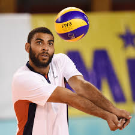

Le volley me passionne, j'y joue en club et regarde régulièrement les compétitions nationnales et internationnales. C'est un sport d'équipe où la coordination entre les joueurs d'une équipe est essentielle.
Les stars du volley français ont marqué l'histoire de ce sport par leur talent, leur détermination et leurs performances exceptionnelles. Earvin Ngapeth, réceptionneur-attaquant, est sans conteste l'une des figures emblématiques du volley mondial, connu pour son jeu spectaculaire et son charisme. Jenia Grebennikov, meilleur libéro du monde à plusieurs reprises, incarne la défense à la française avec ses plongeons impressionnants. Benjamin Toniutti, capitaine et passeur de génie, est le maître à jouer de l'équipe de France, menant son équipe vers des titres prestigieux comme la Ligue des Nations. Chez les femmes, Héléna Cazaute se distingue par son attaque puissante et sa polyvalence, tandis que Christina Bauer, centrale expérimentée, domine au filet avec ses contres redoutables. Ces athlètes, parmi d'autres, ont hissé le volley français au plus haut niveau, faisant briller les couleurs tricolores sur la scène internationale.

| Nom | Poste | Points Marqués | Matchs Joués | Moyenne de Points par Match |
|---|---|---|---|---|
| Earvin Ngapeth | Réceptionneur-Attaqueur | 1200 | 50 | 24.0 |
| Jenia Grebennikov | Libéro | 300 | 50 | 6.0 |
| Kevin Tillie | Réceptionneur-Attaqueur | 900 | 45 | 20.0 |
| Benjamin Toniutti | Passeur | 150 | 50 | 3.0 |
| Nicolas Le Goff | Central | 600 | 50 | 12.0 |
En conclusion, le volley-ball est bien plus qu'un simple sport : c'est une discipline qui allie stratégie, coordination et esprit d'équipe. Que ce soit en salle, sur la plage ou en loisir, il offre une dynamique unique où chaque joueur a un rôle crucial à jouer. Son accessibilité et son universalité en font un sport apprécié à travers le monde, rassemblant des millions de passionnés. Le volley-ball incarne des valeurs fortes, telles que la persévérance, la communication et le respect, tout en procurant un plaisir ludique et compétitif. Que l'on soit amateur ou professionnel, il reste une source inépuisable de défis et de satisfactions, faisant de lui un sport intemporel et captivant.